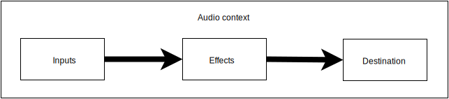
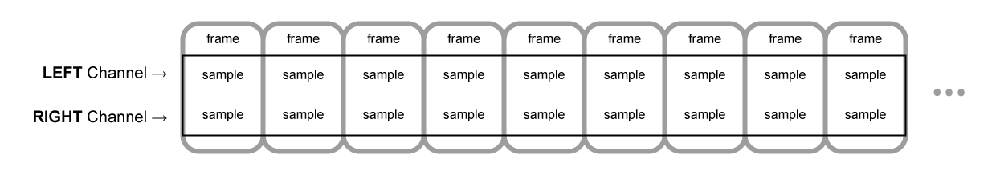
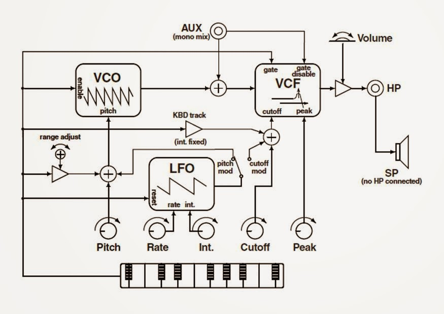
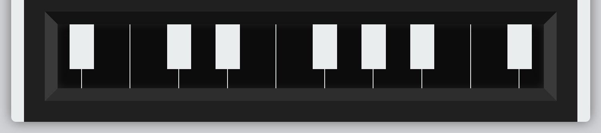

Contents
Аудио wtf mate филтри в уеб наричаме библиотеки, които се използват за създаване и манипулация на звук в уеб (откъдето идва и името филтри).
Най-разпространената имплементация е библиотеката Web Audio API. Тя включва изпълнение на аудио операции в контекст. Аудио операциите се извършват посредством audio node-ове, свързани помежду си оформяйки audio routing graph.
Последователността от ефекти при Web Audio API може да се изобрази по следния начин: 
Звукът минава през върховете на графа под формата на поток, като един поток може да се състои от няколко канала. В зависимост от броя на каналите може да се поддържа различен тип аудио структура, като например моно, стерео, quad и 5.1.
В природата звукът може да се разглежда като непрекъсната функция. На практика това няма как да се представи директно в един компютър и поради това се налага разбиването на непрекъсната функция на малки парчета. Това е така наречение процес на дигитализация. В Web Audio API този процес на дигитализация наричаме sampling. Така един времеви интервал от звук, може да се разбие на n на брой парчета, като всяко от тях е число в масив.
В момент T във всеки канал от потока на звука има извадка. Групата от тези извадки наричаме sample frame на момент T. Също така sample frame-а е n-мерен вектор, където n е броят на каналите.
Този масив от frame-ове се пази в AudioBuffer, който се характеризира с дължина (бр. sample frame-ове) и честота на извадките (sample rate), което е бр. на sample frame-овете пуснати за секунда. Например един стерео буфер може да бъде представен по следния начин: 
Има различни видове аудио буфери, като най-често използваните (и тези поддържани от Web Audio API) са поставени в таблицата отдолу.
| Аудио буфер | Канали |
|---|---|
| Моно | |
| Стерео |
|
| Quad |
|
| 5.1 |
|
В тази част разгледахме какво представлява уеб аудиото и как то работи на чисто концептуално ниво. В следващата част ще се навлезем в повече детайли как се реализират ефекти като този:
LOW PASS EFFECTДосега главно разглеждахме какви са принципите зад Web Audio API. Нека започнем с един елементарен пример:
let bufferSize = 4096;
function getLowPassEffect(audioCtx) {
let lastOut = 0.0;
let node = audioCtx.createScriptProcessor(bufferSize, 1, 1);
node.onaudioprocess = function(e) {
let input = e.inputBuffer.getChannelData(0);
let output = e.outputBuffer.getChannelData(0);
for (let i = 0; i < bufferSize; ++i) {
output[i] = (input[i] + lastOut) / 2.0;
lastOut = output[i];
}
}
return node;
};
В общи линии това е структурата на един аудио филтър.
В предната част се запознахме с това какво представлявата AudioBuffer-ите и, че едно от свойствата им е дължина. Тази дължина трябва да бъде подбрана по оптимален начин защото тя влияе на това, колко често изкарваме звук, т.е. ако е твърде къса, то звука ще се застъпва и овърта, а пък ако е твърде дълга то звука ще се накъсва. Изчислено е, че около 4096 е оптималната стойност.
let bufferSize = 4096;
В този пример дефинираме наш filter node от тип scriptProcessor, който позволява да използваме специфична логика за да постигнем това, което искаме. В случая се възползваме от това, че филтърната функция е closure и използваме външна променлива, в която на всяко завъртане на цикъла запазваме предната честота на звука. Така няма накъсване между изпълнението на отделните audio buffer-и. Така спазваме базовия шаблон на всеки аудио филтър - получаваме два масива, съответно за вход и изход, циклим по входния масив като манипулираме всяка извадка (sample) и я записваме обратно в изходния масив.
В общи линии този ефект е от по-скучните и можете да го чуете като натиснете бутона отдолу. В следващите глави ще разгледаме няколко по-интересни ефекта.
LOW PASS EFFECTPinking филтърът представлява смесица между розов и бял шум, като кара звука, който излиза да звучи малко по смекчено. На код изглежда така:
function getPinkingEffect(audioCtx) {
let bufferSize = 4096;
let b0, b1, b2, b3, b4, b5, b6;
b0 = b1 = b2 = b3 = b4 = b5 = b6 = 0.0;
let node = audioCtx.createScriptProcessor(bufferSize, 1, 1);
node.onaudioprocess = function(e) {
let input = e.inputBuffer.getChannelData(0);
let output = e.outputBuffer.getChannelData(0);
for (let i = 0; i < bufferSize; i++) {
b0 = 0.99886 * b0 + input[i] * 0.0555179;
b1 = 0.99332 * b1 + input[i] * 0.0750759;
b2 = 0.96900 * b2 + input[i] * 0.1538520;
b3 = 0.86650 * b3 + input[i] * 0.3104856;
b4 = 0.55000 * b4 + input[i] * 0.5329522;
b5 = -0.7616 * b5 - input[i] * 0.0168980;
output[i] = b0 + b1 + b2 + b3 + b4 + b5 + b6 + input[i] * 0.5362;
output[i] *= 0.11;
b6 = input[i] * 0.115926;
}
}
return node;
}
Очевидно този пример използва почти същата логика като low-pass филтъра с разликата в това, че тук са използвани 6 low-pass филтъра за разлика от предния пример. С други думи както се забелязва b0 осреднява силата си с предишната си стойност, b1 също прави това и т.н. Тези 6 филтъра са комбинирани с точните стойности така, че средно да се получи приблизително -3 децибела на октава. Като цъкнете долния бутон може да забележите ефекта.
PINKING EFFECTТова е един от най-готините ефекти, които могат да бъдат получени.
function noiseConvolver() {
let convolver = audioContext.createConvolver();
let noiseBuffer = audioContext.createBuffer
2,
0.5 * audioContext.sampleRate,
audioContext.sampleRate);
let left = noiseBuffer.getChannelData(0);
let right = noiseBuffer.getChannelData(1);
for (var i = 0; i < noiseBuffer.length; i++) {
left[i] = Math.random() * 2 - 1;
right[i] = Math.random() * 2 - 1;
}
convolver.buffer = noiseBuffer;
return convolver;
}
В обши линии тук създаваме бял шум с дължина от 0.5 секунди, който се подава съответно на L и R каналите в един стерео буфер. Като цяло чрез този шум могат да бъдат постигнати много интересни ефекти.
Това е класически ефект, чрез който се постига ефект на резонанс. Чрез кода в този пример този ефект може да се апроксимира много добре, но това е просто заобиколен начин да се постигне това.
let bufferSize = 4096;
function moogEffect() {
let node = audioContext.createScriptProcessor(bufferSize, 1, 1);
let in1, in2, in3, in4, out1, out2, out3, out4;
in1 = in2 = in3 = in4 = out1 = out2 = out3 = out4 = 0.0;
node.cutoff = 0.065; // between 0.0 and 1.0
node.resonance = 3.99; // between 0.0 and 4.0
node.onaudioprocess = function(e) {
let input = e.inputBuffer.getChannelData(0);
let output = e.outputBuffer.getChannelData(0);
let f = node.cutoff * 1.16;
let fb = node.resonance * (1.0 - 0.15 * f * f);
for (let i = 0; i < bufferSize; i++) {
input[i] -= out4 * fb;
input[i] *= 0.35013 * (f*f)*(f*f);
out1 = input[i] + 0.3 * in1 + (1 - f) * out1; // Pole 1
in1 = input[i];
out2 = out1 + 0.3 * in2 + (1 - f) * out2; // Pole 2
in2 = out1;
out3 = out2 + 0.3 * in3 + (1 - f) * out3; // Pole 3
in3 = out2;
out4 = out3 + 0.3 * in4 + (1 - f) * out4; // Pole 4
in4 = out3;
output[i] = out4;
}
}
return node;
};
Този ефект квантизира (не знам думата на български) изходния сигнал, т.е. запазва извадка от входния сигнал на определени периоди, които са определени от битовете и normfreq подадени като настройка на върха.
let bufferSize = 4096;
function bitcrusherEffect() {
let node = audioContext.createScriptProcessor(bufferSize, 1, 1);
node.bits = 4; // between 1 and 16
node.normfreq = 0.1; // between 0.0 and 1.0
let step = Math.pow(1/2, node.bits);
let phaser = 0;
let last = 0;
node.onaudioprocess = function(e) {
let input = e.inputBuffer.getChannelData(0);
let output = e.outputBuffer.getChannelData(0);
for (var i = 0; i < bufferSize; i++) {
phaser += node.normfreq;
if (phaser >= 1.0) {
phaser -= 1.0;
last = step * Math.floor(input[i] / step + 0.5);
}
output[i] = last;
}
};
return node;
}
В тази секция разгледахме какво представлява Web Audio API и как да го прилагаме чрез разглеждането на няколко практически примера.
В тази секция ще разгледаме това как можем да си направим монотрон използвайки Web Audio API. Той предствлява един малък синтезатор. Схемата на един монотрон е показана отдолу:
Както се вижда на блоковата схема монотронът е един доста прост синтезатор. Състои се трионообразен осцилатор (VCO), LFO и lowpass filter (VCF). Ограничен е от това, че в даден момент може само една нота да бъде изпълнена. За да възпроизведем синтезатора ще го приложим статегията "Разбивай и владей" като го разбием на 3 части:
Ще започнем с имплементацията на аудио веригата. За да я сглобим ще използваме OscillatorNode за VCO и LFO, а за lowpass filter (VCF) вместо да си пишем отново наш ще използваме вградения BiquadFilterNode в Web Audio API. За начало ще приложим добрите ООП практики като обвием всичко в един клас на име Monotron.
class Monotron
constructor: (@context) ->
@vco = @context.createOscillator()
@lfo = @context.createOscillator()
@lfoGain = @context.createGain()
@vcf = @context.createBiquadFilter()
@output = @context.createGain()
@vco.connect @vcf
@vcf.connect @output
@lfo.connect @lfoGain
@lfoGain.connect @vcf.frequency
@output.gain.value = 0
@vco.type = @vco.SAWTOOTH
@lfo.type = @lfo.SAWTOOTH
@vco.start @context.currentTime
@lfo.start @context.currentTime
noteOn: (frequency, time) ->
time ?= @context.currentTime
@vco.frequency.setValueAtTime frequency, time
@output.gain.linearRampToValueAtTime 1.0, time + 0.1
noteOff: (time) ->
time ?= @context.currentTime
@output.gain.linearRampToValueAtTime 0.0, time + 0.1
connect: (target) ->
@output.connect target
За момента този клас има 4 функции contructor, noteOn, noteOff, connect. Нека разгледаме конструктора. Както споменахме преди използваме OscillatorNode за VCO и LFO. Интересното е, че освен това имаме още два GainNode-а, съответно @lfoGain и @output. @lfoGain контролира какъв е цялостния ефект на LFO над звука, като по този начин съответства на главата за интензивност на LFO. @output е направено по конвенция за да имаме контрол над крайния звук. След това тези компоненти се навръзват един за друг. След това се наслагват някои стойности по подразбиране като например силата на изходния звук да е 0 и също така нагласяме формата на вълната при vco и lfo да е трионообразна (като тази на блоковата схема).
Методът noteOn увеличава силата на звука на VCO. Интересното е, че използваме linearRampToValueAtTime, което извършва интерполация на силата на звука. Така след една секунда плавно се достига до максималната сила на звука. Методът noteOff прави обратното на noteOn.
Методът connect е просто добра конвенция, позволяваща изхода на синтезатора да се закачи към каквото си поискаме, като например това може да бъде аудио уредбата на потребителя.
За момента имаме кода, който върши същинската работа, но за момента е незавършено. Трябва ни някакъв контролен панел откъдето да управляваме инструмента. Монотронът разполага с 5 глави за промяна на аудиото и копче определящо това, което LFO елемента модулира.
<div id="monotron">
<div id="brand">
<h1 id="title">Monotron</h1>
<div id="description">Analogue Ribbon Synthesizer</div>
</div>
<div id="controls">
<div class="panel">
<label>
<select id="mod">
<option>Standby</option>
<option>Pitch</option>
<option>Cutoff</option>
</select>
<br />Mod
</label>
</div>
<div class="panel">
<h2>VCO</h2>
<div class="knobs">
<div class="knob">
<input id="pitch" type="range"
min="0" max="100" data-width="40"
data-height="40" data-angleOffset="220"
data-angleRange="280">
<label>Pitch</label>
</div>
</div>
</div>
<div class="panel">
<h2>LFO</h2>
<div class="knobs">
<div class="knob">
<input id="rate" type="range" min="0"
max="100" data-width="40" data-height="40"
data-angleOffset="220" data-angleRange="280">
<label>Rate</label>
</div>
<div class="knob">
<input id="int" type="range" min="0"
max="100" data-width="40" data-height="40"
data-angleOffset="220" data-angleRange="280">
<label>Int.</label>
</div>
</div>
</div>
<div class="panel">
<h2>VCF</h2>
<div class="knobs">
<div class="knob">
<input id="cutoff" type="range" min="0"
max="100" data-width="40" data-height="40"
data-angleOffset="220" data-angleRange="280">
<label>Cutoff</label>
</div>
<div class="knob">
<input id="peak" type="range" min="0"
max="100" data-width="40" data-height="40"
data-angleOffset="220" data-angleRange="280">
<label>Peak</label>
</div>
</div>
</div>
</div>
<div id="keyboard"></div>
</div>
#brand, #controls и #keyboard съответстват на трите основни секции на синтезатора, като в #controls имаме 4 хоризонтални контролни панели.
Сега остава да приложим и малко css, за да стилизираме нашия синтезатор.
#monotron {
background-color: #212121;
border-left: 1rem solid #eaeeef;
border-right: 1rem solid #eaeeef;
border-radius: 0.38196601065988556rem;
padding: 1.61803399rem;
font-family: "Source Sans Pro", Arial, sans-serif;
color: #eaeeef;
width: 40rem;
}
h1, h2, h3 {
font-family: "Audiowide", Arial, sans-serif;
margin: 0;
font-weight: normal;
}
#brand {
margin-bottom: 1.61803399rem;
}
#title {
font-size: 2.6180339927953202rem;
text-transform: lowercase;
letter-spacing: 0.05em;
}
#description {
text-transform: uppercase;
font-weight: bold;
}
#controls {
.flex-display;
.panel {
padding: @size-base;
.flex(1);
h2 {
text-align: center;
margin-bottom: @size-base;
}
label {
text-transform: lowercase;
font-weight: bold;
}
.knobs {
.flex-display;
.knob {
.flex(1);
text-align: center;
div {
text-align: center;
width: 100% !important;
margin-bottom: @size-small;
}
}
}
&:first-child {
text-align: center;
.flex-display;
.justify-content(center);
.align-items(flex-end);
select {
margin-bottom: @size-small;
}
}
}
}
Остава да добавим главите посредством Javascript. Има една доста добра библиотека за това, която ще използваме. Останалата част от кода в тази секция показва как използваме тази библиотека за да си създадем главите, посредством тази библиотека.
Ui.P2 = function() {
};
Ui.P2.prototype = Object.create(Ui.prototype);
Ui.P2.prototype.createElement = function() {
"use strict";
Ui.prototype.createElement.apply(this, arguments);
this.addComponent(new Ui.Arc({
arcWidth: this.width / 10
}));
this.addComponent(new Ui.Pointer(this.merge(this.options, {
type: 'Rect',
pointerWidth: this.width / 10
})));
this.merge(this.options, {arcWidth: this.width / 10});
var arc = new Ui.El.Arc(this.options);
arc.setAngle(this.options.anglerange);
this.el.node.appendChild(arc.node);
this.el.node.setAttribute("class", "p2");
};
.p2 path {
stroke: none;
fill: @text-color;
stroke-weight: .1;
}
.p2 path:first-child {
fill: darken(@bg-color, 5%);
}
.p2 rect {
fill: @text-color;
}
След това за да почнем да използваме копчетата просто трябва да изпълним кода отдолу при зареждане на страницата.
$ ->
$('.knob input').each (i, knob) ->
knopf = new Knob(knob, new Ui.P2())
Щом вече имаме главите и работещият монотрон отзад, остава да направим клавиатурата, чрез която ще свирим. За да си направим клавиатурата ще използваме динамично генериран html и css.
noteToFrequency = (note) ->
Math.pow(2, (note - 69) / 12) * 440.0
class RibbonKeyboard
constructor: (@$el, @monotron) ->
@minNote = 57
$ul = $('')
for note in [1..18]
$key = $('- ')
if note in [2, 5, 7, 10, 12, 14, 17]
$key.addClass 'accidental'
$key.width (@$el.width() / 20)
$key.css 'left', "-#{$key.width() / 2}px"
$key.css 'margin-right', "-#{$key.width()}px"
else if note in [1, 18]
$key.width (@$el.width() / 20)
else
$key.width (@$el.width() / 10)
$ul.append $key
@$el.append $ul
@mouseDown = false
$ul.mousedown (e) =>
@mouseDown = true
@click(e)
$ul.mouseup (e) =>
@mouseDown = false
@monotron.noteOff()
$ul.mousemove @click
click: (e) =>
return unless @mouseDown
offset = e.pageX - @$el.offset().left
ratio = offset / @$el.width()
min = noteToFrequency @minNote
max = noteToFrequency (@minNote + 18)
@monotron.noteOn ratio * (max - min) + min
Както се вижда от кода конструктора създава 18 клавиша, като те са генерирани с точната ширина. Интеракцията с клавиатурата се извършва посредством стандартните mousedown, mouseup и mouseover събития в javascript.
Остава да направим клавиатурата така, че да изглежда добре. Това ще постигнем, чрез следния CSS.
#keyboard {
.box-sizing(border-box);
.box-shadow(inset 0 0 @size-base fade(@text-color, 10%));
background-color: darken(@bg-color, 8%);
border-left: @size-base solid lighten(@bg-color, 10%);
border-right: @size-base solid lighten(@bg-color, 10%);
border-top: @size-base solid darken(@bg-color, 5%);
border-bottom: @size-base solid lighten(@bg-color, 5%);
height: 7rem;
ul {
margin: 0;
padding: 0;
list-style: none;
width: 100%;
height: 100%;
li {
float: left;
height: 100%;
border-right: 1px solid @text-color;
position: relative;
.box-sizing(border-box);
&.accidental {
background-color: @text-color;
height: 70%;
}
&:last-child {
border: none;
}
}
}
}
След като приложим всичко това, клавиатурата би следвало да изглежда точно като на картинката показана отдолу.
До момента сме изградили всеки един компонент по-отделно, но все още не сме ги свързали по между си и следователно няма как да използваме нашия синтезатор. Ще започнем чрез скрипта отдолу, който за свързване на аудиото с клавиатурата.
$ ->
audioContext = new (AudioContext ? webkitAudioContext)()
window.monotron = new Monotron(audioContext)
masterGain = audioContext.createGain()
masterGain.gain.value = 0.7 # to prevent clipping
masterGain.connect audioContext.destination
monotron.connect masterGain
keyboard = new RibbonKeyboard($('#keyboard'), monotron)
Чрез този скрипт ние създаваме Аудио контекст и Монотрон, регулираме максималната стойност на masterGain за да не се получават застъпвания, които могат да окажат, кофти влияние на звука. След като сме създали тези елементи създаваме нов RibbonKeyboard и го свързваме с аудио веригат. Вече аудио веригата и клавиатурата са свързани.
Вече можем да произвеждаме някакви звуци и имаме полуфинкциониращ синтезатор, което е чудесно. Сега остава да свържем контролния панел. Обаче трябва ще трябва да го редактираме защото аудио параметрите трябва да бъдат скалирани логаритмично, а не линейно. Това е така защото ушите ни не възприемат добре звука когато промяната е линейна. Следователно ще променим .changed метода на главите.
# ... rest of $(document).ready callback ...
params =
rate:
param: monotron.lfo.frequency
min: 0.001
max: 900.0
scale: 1.1
int:
param: monotron.lfoGain.gain
min: 0.5
max: 500.0
cutoff:
param: monotron.vcf.frequency
min: 0.001
max: 900.0
scale: 1.03
peak:
param: monotron.vcf.Q
min: 0.001
max: 1000.0
scale: 1.10
knopfs = []
$('.knob input').each (i, knob) ->
knopf = new Knob(knob, new Ui.P2())
knopfs.push knopf
param = params[knob.id]
if param?
knopf.changed = ->
Knob.prototype.changed.apply this, arguments
# convert to log scale
scale = param.scale ? 1.05
ratio = Math.pow(scale, @value) / Math.pow(scale, @settings.max)
value = ratio * (param.max - param.min) + param.min
param.param.setValueAtTime value, audioContext.currentTime
else if knob.id == "pitch"
knopf.changed = ->
Knob.prototype.changed.apply this, arguments
keyboard.minNote = parseInt @value
Сега остава да конфигурираме модулационния рутер. LFO ще е изключено ако, то се намира в режим "Standby". В противен случай LFO ще модулира или честотата на VCO или на VCF.
# ... rest of $(document).ready callback ...
$('#mod').change (e) ->
target = $(this).find(":selected").val()
monotron.lfoGain.disconnect()
if target is "Pitch"
monotron.lfoGain.connect monotron.vco.frequency
else if target is "Cutoff"
monotron.lfoGain.connect monotron.vcf.frequency
Единственото нещо, което остана е да нагласим параметрите по подразбиране на монотрона, което ще направим чрез следния фрагмент код:
# ... rest of $(document).ready callback ...
# the initial "patch"
$("#pitch").val 57
$("#rate").val 46
$("#int").val 97
$("#cutoff").val 72
$("#peak").val 57
$("#mod").val "Pitch"
knopfs.forEach (knopf) ->
knopf.changed 0
В тази секция се запознахме с това как можем да приложим Web Audio API за да направим нещо по-голямо и практически приложимо.